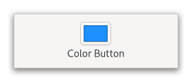

Gtk.ColorButton¶
Example¶

- Subclasses:
None
Methods¶
- Inherited:
Gtk.Widget (183), GObject.Object (37), Gtk.Accessible (18), Gtk.Buildable (1), Gtk.ColorChooser (5)
- Structs:
class |
|
class |
|
|
|
|
|
|
|
|
Virtual Methods¶
Properties¶
- Inherited:
Name |
Type |
Flags |
Short Description |
|---|---|---|---|
r/w/en |
|||
r/w/en |
|||
r/w |
Signals¶
- Inherited:
Name |
Short Description |
|---|---|
Emitted to when the color button is activated. |
|
Emitted when the user selects a color. |
Fields¶
- Inherited:
Class Details¶
- class Gtk.ColorButton(**kwargs)¶
- Bases:
- Abstract:
No
The
GtkColorButtonallows to open a color chooser dialog to change the color.<picture> <source srcset=”color-button-dark.png” media=”(prefers-color-scheme: dark)”> <img alt=”An example
Gtk.ColorButton" src=”color-button.png”> </picture>It is suitable widget for selecting a color in a preference dialog.
- CSS nodes
`` colorbutton ╰── button.color
╰── [content]
GtkColorButtonhas a single CSS node with name colorbutton which contains a button node. To differentiate it from a plainGtkButton, it gets the .color style class.Deprecated since version 4.10: Use [class`Gtk`.ColorDialogButton] instead
- classmethod new()[source]¶
- Returns:
a new color button
- Return type:
Creates a new color button.
This returns a widget in the form of a small button containing a swatch representing the current selected color. When the button is clicked, a color chooser dialog will open, allowing the user to select a color. The swatch will be updated to reflect the new color when the user finishes.
Deprecated since version 4.10: Use [class`Gtk`.ColorDialogButton] instead
- classmethod new_with_rgba(rgba)[source]¶
- Parameters:
rgba (
Gdk.RGBA) – AGdkRGBAto set the current color with- Returns:
a new color button
- Return type:
Creates a new color button showing the given color.
- get_modal()[source]¶
-
Gets whether the dialog is modal.
Deprecated since version 4.10: Use [class`Gtk`.ColorDialogButton] instead
- get_title()[source]¶
- Returns:
An internal string, do not free the return value
- Return type:
Gets the title of the color chooser dialog.
Deprecated since version 4.10: Use [class`Gtk`.ColorDialogButton] instead
Signal Details¶
- Gtk.ColorButton.signals.activate(color_button)¶
- Signal Name:
activate- Flags:
- Parameters:
color_button (
Gtk.ColorButton) – The object which received the signal
Emitted to when the color button is activated.
The
::activatesignal onGtkMenuButtonis an action signal and emitting it causes the button to pop up its dialog.New in version 4.4.
- Gtk.ColorButton.signals.color_set(color_button)¶
- Signal Name:
color-set- Flags:
- Parameters:
color_button (
Gtk.ColorButton) – The object which received the signal
Emitted when the user selects a color.
When handling this signal, use [method`Gtk`.ColorChooser.get_rgba] to find out which color was just selected.
Note that this signal is only emitted when the user changes the color. If you need to react to programmatic color changes as well, use the notify::rgba signal.
Property Details¶
- Gtk.ColorButton.props.modal¶
- Name:
modal- Type:
- Default Value:
- Flags:
Whether the color chooser dialog should be modal.
- Gtk.ColorButton.props.show_editor¶
- Name:
show-editor- Type:
- Default Value:
- Flags:
Whether the color chooser should open in editor mode.
This property should be used in cases where the palette in the editor would be redundant, such as when the color button is already part of a palette.